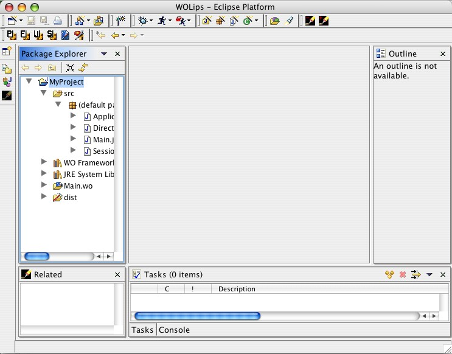
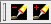
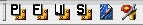
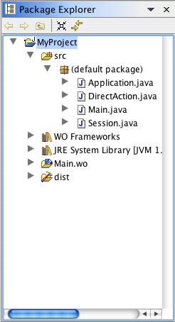

A perspective is a group of views to do some task. For instance the debug perspective to debug. A view is an area in a perspective.
Toolbar with wizard shortcuts. Explorer on the left. Working area in the middle. Outline right. Tasks and Console at the bottom.
To enable/disable the ant build. Also available in the perferences.
Each actions creates a project or project content. Take a look in the tasks section to find out more.
The package explorer shows only some of the files in your project. To customize the visible content, open the view menu (the little triangle) select the filter entry. All files files are visible in the resource view.
The related view shows related files for some file types. To open a file in the text editor, hold down the alt(win) command(mac) modifier while you double click an entry.

Output that should be added to a bug report.